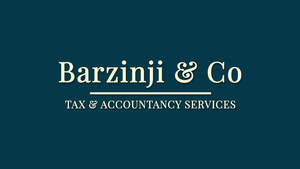
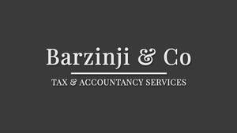

Trade Mark Journal No.2025/043 24 October 2025
UK00004277233 13 October 2025 (35)
Mark 1

Mark 2

- Class 35
- Accounting; Book-keeping and accounting; Management accounting; Book-keeping and accounting services; Administrative accounting; Computerised accounting; Accounting services; Accounting, in particular book-keeping; Cost accounting; Cost management accounting; Consultancy relating to tax accounting; Computerized accounting services; Computerised accounting (Preparation of -); Accounting consultancy relating to taxation; Forensic accounting services; Computerised accounting (Maintenance of -); Accounting advisory services; Business accounting advisory services; Computerised tax assessments (preparation of -) [accounting]; Accounting services relating to tax planning; Business advice relating to accounting; Balance sheet accounting; Bookkeeping; Consulting and information concerning accounting; Financial auditing; Auditing of accounts; School fee accounting services; Accounting services for mergers and acquisitions; Accountancy services relating to accounts receivable; Consultancy and information services relating to accounting; Auditing of financial statements; Accounting services for pension funds; Accountancy; Accounting services relating to costs for farming enterprises; Accountancy, book keeping and auditing; Business auditing; Account auditing; School fee cost accounting services; Business accounts management; Tax consultancy [accountancy]; Taxation [accountancy] consultancy; Tax planning [accountancy]; Provision of reports relating to accounting information; Book-keeping; Accounting for third parties; Financial records management; Provision of information relating to accounts [accountancy]; Accountancy services; Consultancy relating to auditing; Computerised auditing; Taxation [accountancy] advice; Sales account management; Tax advice [accountancy]; Tax consultations [accountancy]; Tax assessment [accounts] preparation; Accountancy advice relating to tax preparation; Tax return advisory [accountancy] services; Accountancy advice relating to the preparation of tax returns; Taxation [accountancy] consultation; Business management analysis; Analysis of business management systems; Accountancy advice relating to taxation; Business records management; Chartered accountancy business services; Consultancy relating to the preparation of business statistics; Assessment analysis relating to business management; Statistical analysis and reporting services for business purposes; Administration (Business -) relating to statistical methods; Business management and consulting; Business management consulting; Consultancy relating to business management; Financial statement preparation and analysis for businesses; Consultancy relating to business document management; Advisory services relating to business management and business operations; Provision of computerised business management information; Bookkeeping for electronic funds transfer; Business consultancy to firms; Consultancy regarding business organisation and business economics; Business organisation consultancy; Business administration consultancy; Consultancy (Professional business -); Professional business consultancy; Business consultancy (Professional -); Business consultancy; Business management and organisation consultancy; Business management organisation consultancy; Business organisation and management consultancy; Business consultancy services relating to insolvency; Consultancy relating to business organisation; Recruitment consultancy for legal secretaries; Business recruitment consultancy; Professional consultancy relating to business management; Business management and organisation consultancy services; Consultancy relating to business management and organisation; Business organisation consulting; Professional business consultancy services; Business appraisal consultancy; Business management and consultancy; Business management consultancy; Computerised book-keeping; Business secretarial services; Business consultancy and advisory services; Business advisory and consultancy services; Veterinary practice business management; Business organisation and management consulting; Business consultancy services; Business management consultancy and advisory services; Consultancy and advisory services for business management; Consultancy relating to business advertising; Business advice and consultancy relating to franchising; Business management and consultancy services; Business management consultancy services; Business management consultancy in the field of corporate travel; Business organisation and management consulting services; Consultancy and advisory services relating to business management; Corporate management consultancy; Corporate management consultancy services; Business marketing consultancy; Professional consultancy relating to marketing; Business organisation advice; Business planning consultancy; Advisory services relating to business organisation; Advisory services relating to business organisation and management; Consultancy relating to business efficiency; Assistance and consultancy relating to business management and organisation; Business advice relating to financial re-organisation; Consultancy relating to business analysis.
Barzinji & Co Ltd